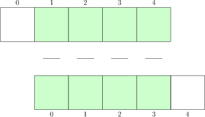

Представим полный вычислительный алгоритм, его реализация на языке Python, реализация анимации решения, и верификация программной реализации.
Основной вычислительный алгоритм представленный в пунктах Вычислительный алгоритм и Эскиз программной реализации можно реализовать в виде функции, аргументами которой будут входные данные задачи. Физические параметры: \( c \), \( I(x) \), \( V(x) \), \( f(x,t) \), \( l \) и \( T \). Вычислительные параметры --- это шаги сетки \( \tau \) и \( h \).
Вместо шагов \( \tau \) и \( h \) можно задать один из этих шагов и число Куранта \( \gamma \), так как явный контроль за этим параметром удобен при анализе вычислительного алгоритма. Многие считают естественным задать размер пространственной сетки и установить значение числа узлов пространственной сетки \( N \). В функции-солвере можно тогда вычислить \( \tau = \gamma l/(c N) \). Однако для сравнения графиков функций \( u(x,t) \) (как функций от \( x \)) для разных значений числа Куранта более удобно зафиксировать \( \tau \) для всех \( \gamma \) и затем изменять \( h \) согласно \( h = c \tau /\gamma \). При фиксированном временном шаге \( \tau \) все кадры анимации будут соответствовать одному и тому же моменты времени и такой подход упрощает создание анимации для сравнения результатов моделирования с разным размером пространственной сетки. Построение графиков функций от \( x \) при разных размерах сетки тривиально. Таким образом, проще варьировать шаг \( h \) при расчетах, чем \( \tau \).
Решение во всех узлах пространственной сетки на новом временном слое
хранятся в массиве y длины \( N+1 \). Мы должны решить, что нам делать с
полученным решением, например: построить график,
проанализировать значения или записать массив в файл для дальнейшего
использования. Решение о том, что делать, остается за пользователем и
может быть реализовано в виде функции
user_action(u, x, t, n)
где u --- решение в узлах пространственной сетки x на временном
слое t[n]. Функцию user_action можно вызывать из солвера при
нахождении решения на каждом \( n \)-ом временном слое.
Если пользователь решит построить график решения или сохранить его на диск на временном слое, он должен реализовать такую функцию и выбрать соответствующее действие внутри нее. Ниже будут приведены примеры таких пользовательский функций.
Первый вариант функции-солвера представлен ниже
def solver(I, V, f, c, l, tau, gamma, T, user_action=None):
K = int(round(T/tau))
t = np.linspace(0, K*tau, K+1) # Сетка по времени
dx = tau*c/float(gamma)
N = int(round(l/dx))
x = np.linspace(0, l, N+1) # Пространственная сетка
C2 = gamma**2 # вспомогательная переменная
if f is None or f == 0 :
f = lambda x, t: 0
if V is None or V == 0:
V = lambda x: 0
y = np.zeros(N+1) # Массив с решением на новом временном слое n+1
y_1 = np.zeros(N+1) # Решение на предыдущем слое n
y_2 = np.zeros(N+1) # Решение на слое n-1
import time; t0 = time.clock() # для измерения процессорного времени
# Задаем начальное условие
for i in range(0,N+1):
y_1[i] = I(x[i])
if user_action is not None:
user_action(y_1, x, t, 0)
# Используем специальную формулу для расчета на первом
# временном шаге с учетом du/dt = 0
n = 0
for i in range(1, N):
y[i] = y_1[i] + tau*V(x[i]) + \
0.5*C2*(y_1[i-1] - 2*y_1[i] + y_1[i+1]) + \
0.5*tau**2*f(x[i], t[n])
y[0] = 0; y[N] = 0
if user_action is not None:
user_action(y, x, t, 1)
# Изменяем переменные перед переходом на следующий
# временной слой
y_2[:] = y_1; y_1[:] = y
for n in range(1, K):
# Пересчитываем значения во внутренних узлах сетки на слое n+1
for i in range(1, N):
y[i] = - y_2[i] + 2*y_1[i] + C2*(y_1[i-1] - 2*y_1[i] + y_1[i+1]) + tau**2*f(x[i], t[n])
y[0] = 0; y[N] = 0 # Задаем граничные условия
if user_action is not None:
if user_action(y, x, t, n+1):
break
# Изменяем переменные перед переходом на следующий
# временной слой
y_2[:] = y_1; y_1[:] = y
cpu_time = t0 - time.clock()
return y, x, t, cpu_time
Для верификации программной реализации будем использовать тестовую
задачу из пункта Неоднородное уравнение. Ниже
представлен юнит-тест основанный на этой
задаче и реализованный в соответствующей тестовой функции (совместимой
с фреймворками для юнит-тестирования nose или py.test).
def test_quadratic():
"""
Проверяет воспроизводится ли точно решение u(x,t)=x(l-x)(1+t/2).
"""
def u_exact(x, t):
return x*(l-x)*(1 + 0.5*t)
def I(x):
return u_exact(x, 0)
def V(x):
return 0.5*u_exact(x, 0)
def f(x, t):
return 2*(1 + 0.5*t)*c**2
l = 2.5
c = 1.5
gamma = 0.75
N = 6 # Используем грубую сетку
tau = gamma*(l/N)/c
T = 18
def assert_no_error(u, x, t, n):
u_e = u_exact(x, t[n])
diff = np.abs(u - u_e).max()
tol = 1E-13
assert diff < tol
solver(I, V, f, c, l, tau, gamma, T,
user_action=assert_no_error)
Если эти функции поместить в файл wave1d_1.py
то запустить юнит-тест можно используя
py.test или nosetests:
Terminal > py.test -s -v wave1d_1.py
Terminal > nosetests -s -v wave1d_1.py
Будут выполнены все функции с именами test_*().
После верификации программной реализации солвера можно приступить к
выполнению расчетов, а также к визуализации результатов
(распространение волн) на экране. Так как функция solver ничего не
знает о способе визуализации (в солевере вызывается функция обратного
вызова user_action(u, x, t, n)), мы должны реализовать
соответствующую функцию обратного вызова.
Следующая функция viz
user_action для построения
графика решения на каждом временном слое;
def viz(
I, V, f, c, l, tau, gamma, T, # Параметры задачи
umin, umax, # Интервал для отображения u
animate=True, # Расчет с анимацией?
tool='matplotlib', # 'matplotlib' или 'scitools'
solver_function=solver, # Функция, реализующая алгоритм расчета
):
"""Запуск солвера и визуализации u на каждом временном слое."""
def plot_u_st(u, x, t, n):
"""Функция user_action для солвера."""
plt.plot(x, u, 'r-',
xlabel='x', ylabel='u',
axis=[0, l, umin, umax],
title='t=%f' % t[n], show=True)
# Начальные данные отображаем на экране в течение 2 сек.
# Далее меду временными слоями пауза 0.2 сек.
time.sleep(2) if t[n] == 0 else time.sleep(0.2)
plt.savefig('frame_%04d.png' % n) # для генерации видео
class PlotMatplotlib:
def __call__(self, u, x, t, n):
"""Функция user_action для солвера."""
if n == 0:
plt.ion()
self.lines = plt.plot(x, u, 'r-')
plt.xlabel('x'); plt.ylabel('u')
plt.axis([0, l, umin, umax])
plt.legend(['t=%f' % t[n]], loc='lower left')
else:
self.lines[0].set_ydata(u)
plt.legend(['t=%f' % t[n]], loc='lower left')
plt.draw()
time.sleep(2) if t[n] == 0 else time.sleep(0.2)
plt.savefig('tmp_%04d.png' % n) # для генерации видео
if tool == 'matplotlib':
import matplotlib.pyplot as plt
plot_u = PlotMatplotlib()
elif tool == 'scitools':
import scitools.std as plt # scitools.easyviz
plot_u = plot_u_st
import time, glob, os
# Удаляем старые кадры
for filename in glob.glob('tmp_*.png'):
os.remove(filename)
# Вызываем солвер и выполняем расчет
user_action = plot_u if animate else None
u, x, t, cpu = solver_function(
I, V, f, c, l, tau, gamma, T, user_action)
# Генерируем видео файлы
fps = 4 # Количество кадров в секунду
codec2ext = dict(flv='flv', libx264='mp4', libvpx='webm',
libtheora='ogg') # Видео форматы
filespec = 'tmp_%04d.png'
movie_program = 'ffmpeg' # или 'avconv'
for codec in codec2ext:
ext = codec2ext[codec]
cmd = '%(movie_program)s -r %(fps)d -i %(filespec)s '\
'-vcodec %(codec)s movie.%(ext)s' % vars()
os.system(cmd)
if tool == 'scitools':
# Создаем HTML для показа анимации в браузере
plt.movie('tmp_*.png', encoder='html', fps=fps,
output_file='movie.html')
return cpu
Функция viz может использовать либо scitools, либо
matplotlib для визуализации решения. Функция действий пользователя,
основанная на scitools называется plot_u_st, тогда как
функция, использующая matplotlib, чуть более сложная и реализована
как класс и должна использовать выражения отличные от построения
статических графиков. Библиотека scitools может использовать как
matplotlib так и gnuplot (и много других графических программ)
для построения графиков, но gnuplot более подходящая программа для
больших значений \( N \) или для двумерных задач, так как
gnuplot работает существенно быстрее при построении анимации на
экране.
Функция внутри другой функции, такая как plot_u_st в
представленном выше фрагменте кода, имеет доступ ко всем локальным
переменным функции viz. Такой подход называется включением и
является очень удобным. Например, модули plt и time
определенные вне plot_u_st являются доступными для plot_u_st,
когда эта функция вызывается (как user_action) в функции
solver. Возможно использование классов вместо включений более
понятно для понимания кода при реализации функции действий пользователя.
Функция plot_u_st просто вызывает стандартную команду plot
модуля scitools для построения графика зависимости u от x
в каждый момент времени t[n]. Для того, чтобы добиться гладкой
анимации, команда plot должна принимать параметры вместо того,
чтобы прерываться вызовом xlabel, ylabel, axis, time и
show. Несколько вызовов функции plot будет автоматически
вызывать анимацию на экране. Кроме того, мы сохраняем каждый
кадр в файл с именами, где номер кадра дополнен нулями:
tmp_0000.png, tmp_0001.png и т.д. Для этого используется
соответствующий формат вывода tmp_%04d.png.
Солвер вызывается с аргументом user_action = plot_u. Если
пользователь использует scitools, то plot_u --- это
функция plot_u_st, а для matplotlib параметр plot_u является
экземпляром класса PlotMatplotlib. Также этот класс использует
переменные, определенные в функции viz: plt и time. В
случае использования matplotlib нужно первый график строить
стандартным образом, а затем обновлять значения по оси :math:`y` на
графике для каждого временного слоя. Обновление требует активного
использования значения, возвращаемого функцией plt.plot при первом
построении графика. Это значение нужно было бы сохранять в локальной
переменной, если бы мы использовали включение для функции действий
пользователя при построении анимации на основе
matplotlib. Проще сохранять эту переменную как свойство класса
self.lines. Так как по существу данный класс является функцией, мы
реализуем функцию как специальный метод __call__ так, что экземпляр
класса plot_u(u, x, t, n) может быть вызван как функция обратного
вызова из solver.
Из файлов tmp_*.png, содержащих кадры анимации, мы можем
сгененрировать видео файлы. Мы используем программу ffmpeg (или
avconv) для объединения отдельных графиков в видео файл в
следующих форматах: Flash, MP4, WebM и Ogg. Обычная команда вызова
ffmpeg (или avconv) для генерации видео файла в формате Ogg с
частотой 4 кадра в секунду из набора файлов вида tmp_%04.png,
выглядит следующим образом
Terminal > ffmpeg -r 4 -i tmp_%04d.png -c:v libtheora movie.ogg
Для разных форматов должны быть указан соответствующий
кодировщик: flv для Flash, libvpx для WebM и libx264 для
MP4:
Terminal > ffmpeg -r 4 -i tmp_%04d.png -c:v flv movie.flv
Terminal > ffmpeg -r 4 -i tmp_%04d.png -c:v libvpx movie.webm
Terminal > ffmpeg -r 4 -i tmp_%04d.png -c:v libx264 movie.mp4
Для просмотра полученных видео файлов можно использовать медиа
проигрыватели такие как vlc, mplayer и т.п.
Функция viz генерирует команду вызова ffmpeg или avconv с
соответствующими аргументами для каждого формата. Задача существенно
упрощается, если воспользоваться словарем codec2ext соответствия
имени кодека расширению файла. Для того, чтобы быть уверенным, что
любой браузер отобразит видео файл достаточно только два формата: MP4
и WebM.
При создании видео файлов, содержащих большое число графических
файлов, с помощью команд ffmpeg или avconv могут возникать
проблемы. Метод, который всегда будет работать заключается в
проигрывании PNG файлов в браузере с использованием JavaScript в HTML
файле. Пакет модулей scitools содержит функцию movie (или
автономную команду scitools movie) для создания HTML страниц,
содержащих такие проигрыватели. Вызов plt.movie в функции viz
демонстрирует использование этой функции. Файл movie.html можно
загрузить в браузере.
Иногда большие значения \( T \) и малые значения \( \tau \)
приводят большому количеству кадров и медленному воспроизведению
анимации на экране. Решение этой проблемы заключается в выборе общего
числа кадров в анимации, num_frames, и построении графиков решения
только для каждых skip_frame кадров. Например, задание
skip_frame = 5 приводит к построению каждого 5 кадра. Значение по
умолчанию skip_frame = 1 дает построение каждого кадра. Общее
количество временных слоев (т.е. максимально возможное количество
кадров) --- это длина массива t, t.size (или len(t)),
тогда если мы зададим количество кадров num_frames в анимации, мы
должны строить каждый t.size/num_frames кадр:
skip_frame = int(t.size/float(num_frames))
if n % skip_frame == 0 or n == t.size - 1:
st.plot(x, u, 'r-', ...)
Простой выбор количества кадров можно проиллюстрировать следующим
образом: пусть всего у нас есть 801 кадр и мы хотим, чтобы только 60
кадров было построено. Значит мы должны строить каждый 801/60 кадр,
т.е. каждый (every) 13 кадр. Операция n % every будет принимать
значение ноль каждый раз, когда n делится на 13 без остатка.
Первый пример использования солвера одномерного волнового уравнения будет связан с колебанием струны, имеющей начальное положение в виде треугольника: $$ \begin{equation} \tag{25} I(x) = \begin{cases} a x/x_0, & x < x_0, \\ a(l - x)/(l - x_0), & x \geq x_0. \end{cases} \end{equation} $$
Пусть \( l = 75 \) см, \( x_0 = 0.8l \), \( a = 5 \) мм, и частота колебаний \( \nu = 440 \) Гц. Соотношение между скоростью волны \( c \) и частотой \( \nu \) имеет вид \( c = \nu \lambda \), где \( \lambda \) --- длина волны, взятая равной \( 2l \). Отсутствуют внешние силы, поэтому \( f = 0 \), и в начальный момент времени струна находится в состоянии покоя, поэтому \( V = 0 \). Также мы должны задать \( \tau \).
Функция, устанавливающая физические и численные параметры и вызываемая
из viz может иметь вид:
def guitar(gamma):
"""Треугольная волна."""
l = 0.75
x0 = 0.8*l
a = 0.005
freq = 440
wavelength = 2*l
c = freq*wavelength
omega = 2*np.pi*freq
num_periods = 1
T = 2*np.pi/omega*num_periods
# Выбираем tau таким же, как при условии устойчивости для N=50
tau = l/50./c
def I(x):
return a*x/x0 if x < x0 else a/(l-x0)*(l-x)
umin = -1.2*a; umax = -umin
cpu = viz(I, 0, 0, c, l, tau, gamma, T, umin, umax,
animate=True, tool='scitools')
return cpu
Соответствующий код представлен в файле wave1d_1.py.
В зависимости от изучаемой модели, может понадобиться получить согласующиеся и обоснованные значения физических параметров. Пример моделирования гитарной струны иллюстрирует эту ситуацию. Однако, масштабировав (обезразмерив) математическую задачу, часто можно уйти от проблемы оценки физических параметров. Метод обезразмеривания состоит во введении новых независимых и зависимых переменных, благодаря чему из абсолютные значения не будут очень большими или малыми, а желательно близкими к единице. Введем безразмерные переменные $$ \bar{x} = \frac{x}{l}, \quad \bar{t} = \frac{c}{l} t, \quad \bar{u} = \frac{u}{a}. $$ Здесь \( l \) --- характерный масштаб длины, например, размер области, \( a \) --- характерный размер \( u \), например, полученный из начальных данных \( a = \max_x |I(x)| \). Подставив новые переменные, получим $$ \frac{\partial u}{\partial t} = \frac{al}{c} \frac{\partial \bar{u}}{\partial\bar{t}}, $$ откуда, в случае \( f = 0 \) имеем $$ \frac{a^2l^2}{c^2}\frac{\partial^2 \bar{u}}{\partial \bar{t}^2} = \frac{a^2l^2}{c^2} \frac{\partial^2 \bar{u}}{\partial\bar{x}^2}. $$ Отбрасывая черту сверху у переменных, приходим к безразмерному волновому уравнению $$ \begin{equation} \tag{26} \frac{\partial^2 u}{\partial t^2} = \frac{\partial^2 u}{\partial x^2}, \end{equation} $$ в котором отсутствует коэффициент \( c^2 \). Начальные условия масштабируются следующим образом $$ a \bar{u}(\bar{x}, 0) = I(l\bar{x}) $$ и $$ \frac{a}{l/c} \frac{\partial \bar{u}(\bar{x},0)}{\partial \bar{t}} = V(l\bar{x}). $$ Отсюда $$ \bar{u}(\bar{x},0) = \frac{I(l\bar{x})}{\max_x|I(x)|}, \quad \frac{\partial \bar{u}(\bar{x},0)}{\partial \bar{t}} = \frac{l}{ac} V(l\bar{x}). $$
В случае, когда \( V(x) = 0 \), видим, что в математической модели отсутствуют физические параметры.
Если у нас есть реализована программа для математической модели,
учитывающей физические параметры и размерности, мы можем получить
безразмерную версию, выбрав \( c = 1 \). Начальное условия для
моделирования гитарной струны (25)
может быть обезразмерено с помощью выбора следующих параметров \( a = 1 \),
\( l = 1 \) и \( x_0 \in [0, 1] \). Это означает, что мы должны
выбирать только значение \( x_0 \) как долю единицы, так как
значения остальных параметров равны единице. В коде мы должны только
задать a = c = l = 1, x_0 = 0.8 и больше не нужно никаких
вычислений длины волны и частоты для оценки коэффициента \( c \).
Осталось оценить в обезразмеренной задаче конечный момент времени, или более точно, оценить как этот момент связан с количеством периодом колебаний, так как часто возникает потребность задавать конечный момент времени как некоторое количество периодов. В безразмерной модели период колебаний равен 2, таким образом, конечный момент времени может задаваться как желаемое количество периодов, умноженное на 2.
Почему безразмерный период равен 2? Предположим, что \( u \) ведет себя как \( \cos(\omega t) \) в зависимости от временной переменной. Соответствующий период тогда равен \( P = 2\pi/\omega \), но мы должны оценить \( \omega \). Естественное решение волнового уравнения имеет вид \( u(x,t) = A \cos(k x)\sin(\omega t) \), где \( A \) --- амплитуда, а \( k \) связано с длиной волны \( \lambda \) в пространстве: \( \lambda = 2\pi/k \). Как \( \lambda \), так и \( A \) будут заданы начальным условием \( I(x) \). Подставляя \( u(x,t) \) в волновое уравнение получим \( -\omega^2 = -c^2k^2 \), т.е. \( \omega = ck \). Следовательно, период равен \( P = 2\pi/(kc) \). Если для граничных условий выполнено \( u(0, t) = u(l, t) \), будем иметь \( kl = n\pi \), \( n \in \mathbb{Z} \). Тогда \( P = 2l/(nc) \). Максимальный период \( P = 2l/c \). Безразмерный период \( \tilde{P} \) получаем делением \( P \) на временной масштаб \( l/c \), что дает \( \tilde{P} = 2 \). Кратчайшие волны в начальных условиях будут иметь безразмерный период \( \tilde{P} = 2/n \) (\( n > 1 \)).
Вычислительный алгоритм решения волнового уравнения в каждом узле сетки выполняет по заданной формуле вычисление нового значения \( y_i^{n+1} \). Программно это реализовано посредством цикла по элементам массива. Такие циклы могут выполнятся медленно в Python (и аналогичных интерпретируемых языках таких как R и MATLAB). Один из методов ускорения циклов заключается в выполнении операций с целых массивах вместо работы с одним элементом массива в текущий момент времени. Это называют векторизацией или векторными вычислениями. Операции над целыми массивами возможны, если вычисления, затрагивающие каждый элемент, не зависят от других элементов. Векторизация не только ускоряет работу программы на последовательных компьютерах, но также делают программу проще для использования параллельных вычислений.
Эффективное применение numpy требует, чтобы мы избегали
использования циклов, а проводили вычисления с целыми массивами за
один раз (или как минимум с большими частями массивов). Рассмотрим
такое вычисление разностей \( d_i = u_{i+1} - u_i \):
n = u.size
for i in range(0, n-1):
d[i] = u[i+1] - u[i]
Все разности в этом случае не зависят друг от друга. Вычисление
массива d может, таким образом, быть получено вычитанием массива
[u[0], u[1], ..., u[n-1]] из массива, в котором элементы
сдвинуты на один индекс вперед
(см. рис. 3). Первое подмножество массива можно
выразить следующим
образом u[0:n-1], u[0:-1] или просто u[:-1], т.е. элементы
с индексами от 0 до n-2. Второе подмножество можно получить так
u[1:n] или u[1:], т.е. элементы с индексами от 1 до
n-1. Вычисление d теперь можно выполнить без явных циклов на
Python:
d = u[1:] - u[:-1]
или с явным указанием границ:
d = u[1:n] - u[0:n-1]
Индексы с двоеточием, идущие от одного до (но не включая
его) другого индекса называются срезами. При использовании массивов
numpy вычисления выполняются все еще с использованием циклов, но
посредством эффективного компилированного оптимизированного C или
Fortran кода. Такие циклы иногда называются векторизованными
циклами. Такие циклы могут также легко быть распределены между
многими процессорами на параллельных компьютерах. Будем говорить, что
скалярный код, работающий с одним элементов в конкретный момент
времени, заменен на эквивалентный векторизованный код. Процесс
получения векторизованного кода называется векторизацией.
Рисунок 3: Иллюстрация вычитания срезов двух массивов

Для понимания преимущества векторизованных вычислений задайте любой
небольшой массив u, например, из пяти элементов, и попробуйте
смоделировать на бумаге как циклическую, так и векторизованную
версии рассмотренной выше операции.
Конечно-разностные схемы в своей основе содержат разности между элементами массивов со сдвинутыми индексами. Например, рассмотрим формулу вычисления значений на новом временном слое
for i in range(1, n-1):
u2[i] = u[i-1] - 2*u[i] + u[i+1]
Векторизация состоит в замене цикла на арифметику срезов массивов
размера n-2:
u2 = u[:-2] - 2*u[1:-1] + u[2:]
или
u2 = u[0:n-2] - 2*u[1:n-1] + u[2:n]
Отметим, что длина массива u2 становится равной n-2. Если
массив u2 --- массив длины n и нам нужно использовать формулы
пересчета значений во "внутренних" элементах массива u2, мы можем
написать
u2[1:-1] = u[:-2] - 2*u[1:-1] + u[2:]
или
u2[1:n-1] = u[0:n-2] - 2*u[1:n-1] + u[2:n]
Правая часть первого выражения осуществляется следующими шагами,
привлекающими временные массивы с промежуточными результатами, так как
каждый операция над массивами может использовать один или два
массива. Пакет numpy осуществляет первое выражение за четыре шага:
temp1 = 2*u[1:-1]
temp2 = u[:2] - temp1
temp3 = temp2 + u[2:]
u2[1:-1] = temp3
Нам требуется три временных массива, но пользователь не должен беспокоится о таких временных массивах.
Выражения со срезами массивов требуют, чтобы срезы имели одну и ту же форму (shape). Легко сделать ошибку, например, в
u2[1:n-1] = u[0:n-2] - 2*u[1:n-1] + u[2:n]
и написать
u2[1:n-1] = u[0:n-2] - 2*u[1:n-1] + u[1:n]
Теперь u[1:n] имеет длину n-1 в отличие от других срезов
массива, что приводит к ошибке ValueError и появлению сообщения
could not broadcast input array from shape 103 into shape 104
(если n равно 105). Когда возникает такая ошибка нужно
тщательно проверить все срезы. Обычно, проще получить правильно
верхнюю границу среза используя -1 или -2 или пустую
границу, в отличие от использования в выражении длины массива.
Еще одна распространенная ошибка заключается в том, что пользователь забывает указать срез в левой части выражения
u2 = u[0:n-2] - 2*u[1:n-1] + u[2:n]
Это на самом деле критично: теперь u2 становится новым массивом
неправильного размера n-2, так как в нем будут отсутствовать
граничные значения.
Векторизация также хорошо работает при использовании функций. Для того, чтобы проиллюстрировать это, мы можем расширить предыдущий пример следующим образом:
def f(x):
return x**2 + 1
for i in range(1, n-1):
u2[i] = u[i-1] - 2*u[i] + u[i+1] + f(x[i])
Векторизованный вариант может быть записан следующим образом:
u2[1:-1] = u[:-2] - 2*u[1:-1] + u[1:] + f(x[1:-1])
Очевидно, что f должна иметь возможность принимать в качестве
аргумента массив, чтобы выражение f(x[1:-1]) имело смысл.
Перейдем к векторизации вычислительного алгоритма, математическое описание которого дано в разделе Вычислительный алгоритм, а программная реализация описана в разделе Функция-солвер. Алгоритм содержит три цикла: один для задания начальных данных, один для расчета значений на первом временном слое, и, наконец, цикл, который повторяется для последовательных временных слоев. Рассмотрим векторизацию последнего цикла:
for i in range(1, N):
u[i] = 2*u_1[i] - u_2[i] + \
C2*(u_1[i-1] - 2*u_1[i] + u_1[i+1])
Его векторизованная версия может быть записана следующим образом:
u[1:-1] = - u_2[1:-1] + 2*u_1[1:-1] + \
C2*(u_1[:-2] - 2*u_1[1:-1] + u_1[2:])
или
u[1:N] = - u_2[1:N] + 2*u_1[1:N] + \
C2*(u_1[:N-1] - 2*u_1[1:N] + u_1[2:N+1])
Программа wave1d_v.py содержит
новую версию функции solver, в которой используются как скалярные,
так и векторизованные циклы (аргумент version может принимать
значения scalar или vectorized, соответственно).
Мы можем повторно использовать квадратичное решение \( u_e(x,t) =
x(l-x)(1+0.5t) \) для верификации векторизованного кода. Тестовая
функция может проверять как скалярную, так и векторизованную
версии. Кроме того, мы можем использовать функцию user_action,
которая сравнивает точное и расчитанное решения на каждом временном
слое и выполнять тест:
def test_quadratic():
"""
Проверяет воспроизводят ли скалярная и векторизованная версии
решение u(x,t)=x(l-x)(1+t/2) точно.
"""
# Следующие функции должны работать при x заданном как массив или скаляр
u_exact = lambda x, t: x*(l - x)*(1 + 0.5*t)
I = lambda x: u_exact(x, 0)
V = lambda x: 0.5*u_exact(x, 0)
# f --- скаляр (zeros_like(x) тоже работает для скалярного x)
f = lambda x, t: np.zeros_like(x) + 2*c**2*(1 + 0.5*t)
l = 2.5
c = 1.5
gamma = 0.75
N = 3 # Очень грубая сетка для теста
tau = gamma*(l/N)/c
T = 18
def assert_no_error(y, x, t, n):
u_e = u_exact(x, t[n])
tol = 1E-13
diff = np.abs(y - u_e).max()
assert diff < tol
solver(I, V, f, c, l, tau, gamma, T,
user_action=assert_no_error, version='scalar')
solver(I, V, f, c, l, tau, gamma, T,
user_action=assert_no_error, version='vectorized')
Представленный выше фрагмент кода иллюстрирует, как получить компактный код без потери читабельности, используя лямбда-функции для разных входных параметров-функций. По существу, код
f = lambda x, t: l*(x-t)**2
эквивалентен следующему
def f(x, t):
return l*(x-t)**2
Отметим, что лямбда-функции могут содержать только одно выражение, а не операторы.
Одним из преимуществ лямбда-функций является то, что они могут быть использованы непосредственно в вызовах:
solver(I=lambda x: sin(pi*x/L), V=0, f=0, ...)
В сценарии wave1d_v.py содержится
новая функция solver, в которой реализованы как скалярные так и
векторизованные вычисления. Для оценки эффективности векторизованного
варианта по сравнению со скалярным нам потребуется функция viz
рассмотренная в разделе Визуализация: анимация решения. Ее можно
использовать всю за исключением вызова
функции-солвера. В этом вызове отсутствует параметр version,
который нам понадобиться для измерения эффективности.
Одно из решений этого вопроса --- скопировать функцию viz из
сценария wave1d_1.py в
сценарий wave1d_v.py и добавить
аргумент version в вызов solver_function. Однако, в этом
случае мы будем дублировать большой фрагмент сложного кода,
реализующего анимацию, поэтому такой подход --- не очень хорошая
идея. Добавление параметра `version`в функции wave1d_1.py.viz
тоже плохое решение, так как этот параметр не имеет смысла в сценарии
wave1d_1.py.
Вызов функции viz из wave1d_1.py
с параметром solver_function заданным, как
наш новый solver из wave1d_v.py
--- приемлемый вариант, так как параметр
version по умолчанию установлен в значение 'vectorized'. Новую
функцию viz в wave1d_v.py
которая имеет параметр version и вызывает только wave1d_1.viz,
можно реализовать следующим образом:
def viz(
I, V, f, c, l, tau, gamma, T, # Параметры задачи
umin, umax, # Интервал для отображения u
animate=True, # Расчет с анимацией?
tool='matplotlib', # 'matplotlib' или 'scitools'
solver_function=solver, # Функция, реализующая алгоритм
version='vectorized', # 'scalar' или 'vectorized'
):
import wave1d_1
if version == 'vectorized':
# Повторно использует viz из wave1d_1, но с новой
# векторизованной функцией solver из данного модуля
# (где version='vectorized' задан по умолчанию;
# wave1d_1.viz не имеет этого аргумента)
cpu = wave1d_1.viz(
I, V, f, c, l, tau, gamma, T, umin, umax,
animate, tool, solver_function=solver)
elif version == 'scalar':
# Вызваем wave1d_1.viz со скалярным солвером
# и используем wave1d_1.solver.
cpu = wave1d_1.viz(
I, V, f, c, l, tau, gamma, T, umin, umax,
animate, tool,
solver_function=wave1d_1.solver)
Существует более продвинутое решение, использующее очень полезный
"трюк": мы можем объявить новую функцию, которая будет всегда вызывать
wave1d_v.solver с параметром version='scalar'. Функция Python
functools.partial принимает функцию func в качестве аргумента
и ряд других параметров и возвращает новую функцию, которая вызывает
func с заданными аргументами. Рассмотрим простейший пример:
def f(a, b, c=2):
return a + b + c
Мы хотим, чтобы функция f всегда вызывалась с c=3, т.е. чтобы
f имела только два варьируемых параметра a и b. Это можно
получить следующим образом:
import functools
f2 = functools.partial(f, c=3)
print f2(1, 2) # результат: 1 + 2 + 3 = 6
Теперь функция f2 вызывает f с любыми заданными параметрами
a и b, но c всегда будет иметь значение 3.
В функции viz можно сделать следующее:
import functools
scalar_solver = functools.partial(solver, version='scalar')
cpu = wave1d_1.viz(
I, V, f, c, l, tau, gamma, T, umin, umax,
animate, tool,
solver_function=scalar_solver)
Новая функция scalar_solver принимает те же аргументы, что и
wave1d_1.solver, а вызывает wave1d_v.solver, но всегда задает
параметр version='scalar'.
Теперь у нас есть функция viz, которая может вызывать солвер в
режиме как скалярных, так и векторизованных вычислений. Функция
run_efficiency_experiments в wave1d_v.py
выполняет серию экспериментов и сообщает процессорное время,
затраченное скалярным и векторизованным солверами для задачи о
колебании струны с количеством узлов пространственной сетки
\( N = 50, 100, 200, 400, 800 \). Запуск этой функции показывает,
что векторизованные вычисления существенно быстрее: векторизованный
код работает примерно в \( N/10 \) раз быстрее, чем скалярный.
В конце расчета на каждом временном слое мы должны обновить массивы
y_2 и y_1 так, чтобы они содержали правильные значения для
расчета на следующем временном слое:
y_2[:] = y_1
y_1[:] = y
Здесь важен порядок! Если сначала обновить y_1, то массив y_2
будет равен y, что неправильно.
Присваивание y_1[:] = y копирует содержимое массива y в
элементы массива y_1. Такое копирование занимает время, но это
время незначительно по сравнению со временем необходимым для
вычисления ``y`` по разностной схеме, даже если эти вычисления
векторизованы. Однако, эффективность программного кода --- это
ключевой момент при численном решении задач для уравнений в частных
производных (в частности, двумерных и трехмерных задач), поэтому стоит
отметить, что существует более эффективный способ обновления массивов
y_2 и y_1 для расчета на новом временном слое. Идея основана
на переключающихся ссылках.
Переменные в Python --- это, на самом деле, ссылки на некоторые
объекты. Вместо копирования данных, мы можем указать, что y_2
ссылается на объект y_1, а y_1 ссылается на объект y. Это
очень быстрая операция. Простая реализация вида
y_2 = y_1
y_1 = y
будет ошибочной, потому что теперь y_2 ссылается на объект
y_1, но теперь y_1 --- это ссылка на объект y, так что
теперь объект y имеет две ссылки, при этом наш третий массив, на
который изначально ссылалась переменная y_2, больше не имеет
ссылки и поэтому потерян. Это означает, что переменные y_2,
y_1 и y ссылаются на массива, а не на три. Следовательно,
вычисления на следующем временном слое будут перемешаны, так как
изменение элементов y будет приводить также к изменению элементов
y_1. Поэтому решение на предыдущем временном слое нарушается.
В то время как выражение y_2 = y_1 сработает хорошо, выражение
y_1 = y вызовет проблемы. Чтобы избежать этой проблемы нужно быть
уверенным, что y будет ссылаться на массив y_2. Математически
это неправильно, но новые корректные значения будут записаны в y
при расчете на следующем временном слое.
Корректное переключение ссылок имеет вид:
tmp = y_2
y_2 = y_1
y_1 = y
y = tmp
Можно избавиться от временной ссылки tmp, используя следующую
запись:
y_2, y_1, y = y_1, y, y_2
Такое переключение ссылок будет использоваться нами в дальнейших программных реализациях.
Обновление y_2, y_1, y = y_1, y, y_2 оставляет неправильные
значения на последнем временном слое. Это значит, что если мы будем
возвращать y, как делалось в примерах кода, мы, на самом деле,
вернем y_2, что неправильно. Поэтому важно скорректировать
содержимое y перед его возвращением следующим образом: y = y_1.